Linlin Jia, Ph.D.
Machine Learning Research ScientistPostdoc @ University of Bern
Graph Machine Learning · Spatio-Temporal Learning · Graph AI for Science & Industry · LLM Systems & Agents
SNSF
+ Innosuisse
+ ANR-funded
· Author of graphkit-learn + LIULIAN
· 9 papers · 8+ projects/grants
Open to Work
Actively applying: available in short time
About Me
Building graph representation learning across domains: open-source tools, models, and AI systems for research & industry.
- 🇨🇭 Pattern Recognition Group (PRG), University of Bern: Postdoc.
- Academic focus: graph representation learning: graph kernels, graph edit distances, GNNs, transformers, pre-image & generation.
- Application focus: redox potential prediction (foundation for drug discovery & polymer optimization), spatio-temporal hydrology (Swiss river water temperature), and engineering diagram analysis (PLANALYSER).
- Industry collaborations: AI strategy & LLM agents with N-Banker FinTech startup; HVAC-concept audit with WATTELSE (PLANALYSER).
- Open-source libraries:
graphkit-learn,liulian,redoxprediction, etc. - Ph.D. (2021), 🇫🇷 LITIS Lab, INSA Rouen: thesis Apprivoiser la Pré-image: graph kernels, graph edit distances & ML for structured data (advisors: Prof. Paul Honeine & Prof. Benoit Gaüzère).
- M.Sc. Software Engineering (2017) & B.Sc. Information Engineering (2014), 🇨🇳 Xi'an Jiaotong University, China.
- Supervised 20+ students and co-led / participated in multiple SNSF, Innosuisse, ANR, and UniBE-funded projects.
- Open to ML Research Scientist / Research Engineer roles: academia & industry, on-site / hybrid / remote.
Selected Publications
130+ citations · Google Scholar
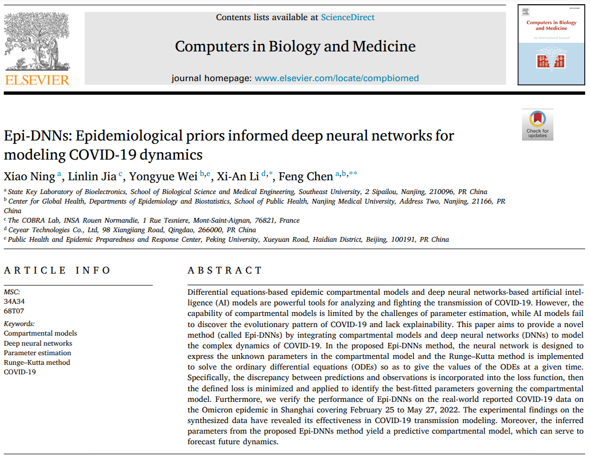
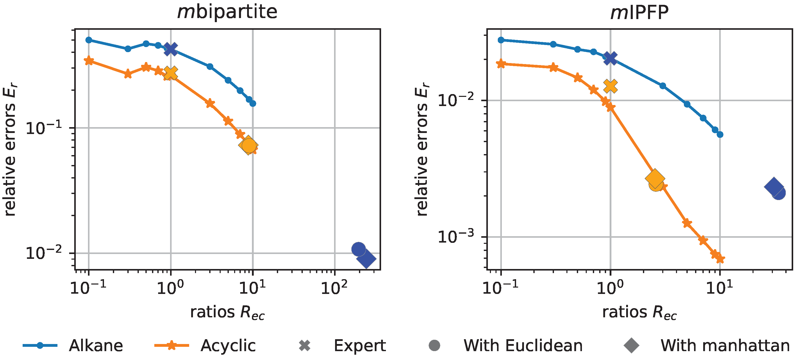
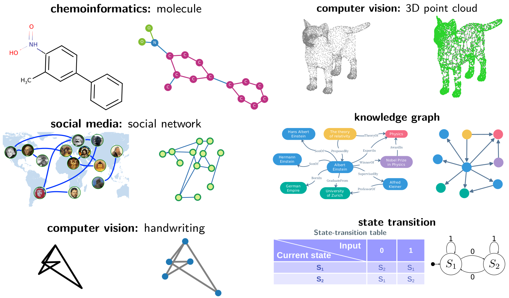
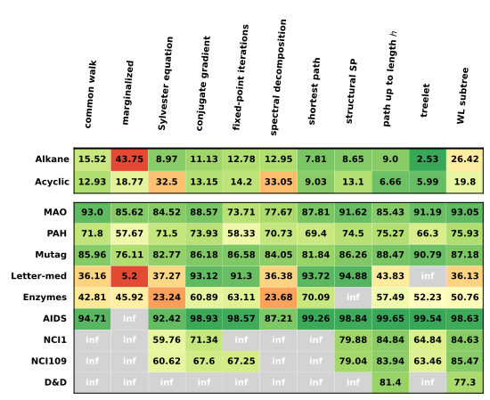
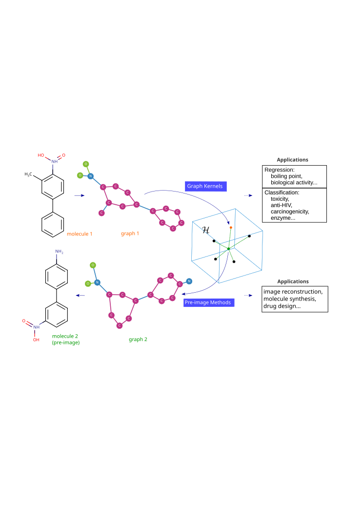
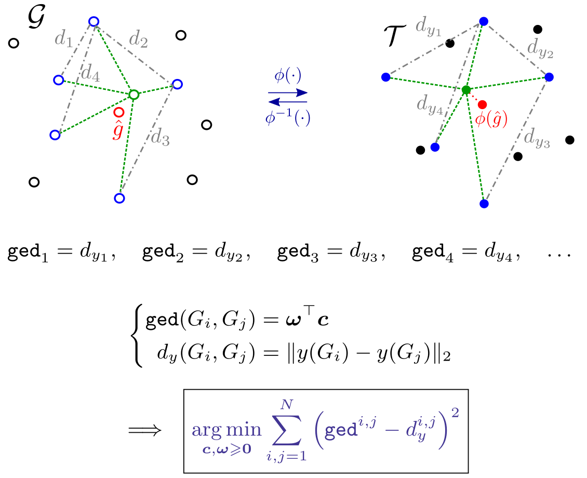
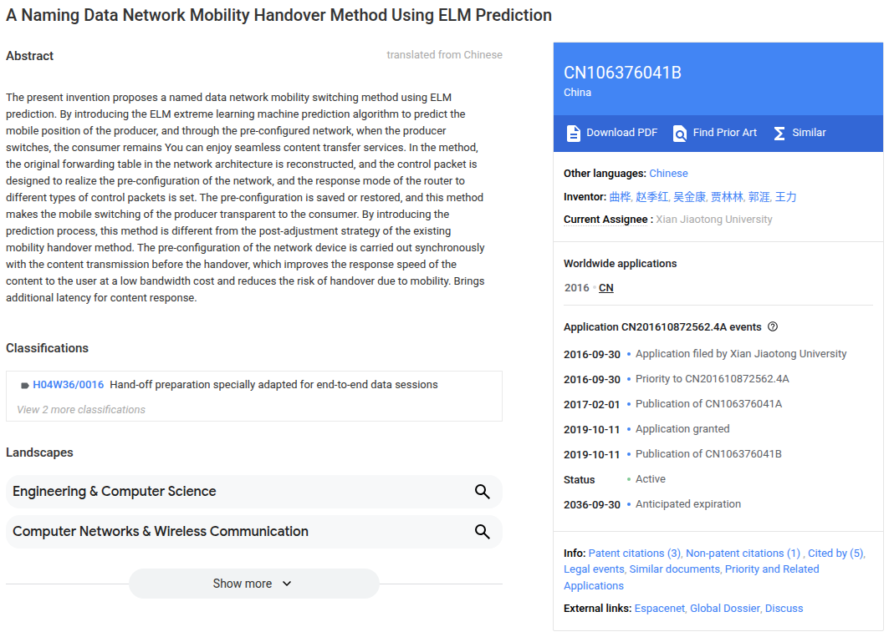
Bridging graph and kernel spaces: a pre-image perspective
Graph kernels, graph edit distances, and pre-image algorithms and applications. Supervised by Prof. Paul Honeine and Prof. Benoit Gaüzère.
Projects
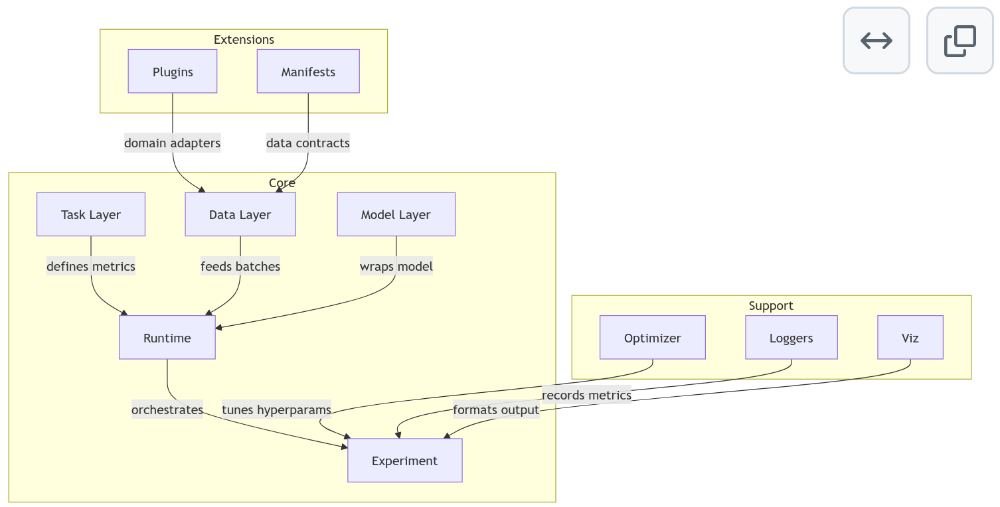
LIULIAN: Liquid Intelligence and Unified Logic for Interactive Adaptive Networks
- Spatio-temporal data platform: collection, processing, analysis, and visualization for scientific and engineering domains.
- Multimodal scientific graph benchmarks.
- LLM-driven data interfaces and BI agent systems.
- Consolidates PhD/postdoc research in graph ML (kernels, GED, GNNs, pre-image).
- Preparing Innosuisse Innovation Project funding application.
Spatio-Temporal Graph Convolutional Networks for River Temperature Forecasting
- SNSF-funded project on graph-based Swiss river water temperature forecasting.
- Developed spatio-temporal transformer and LLM architectures with entity embeddings + graph structures.
- Paper accepted at ICPR 2026.
- 🤝 Partners: Pattern Recognition Group (UniBE) × Berne UAS (BFH).
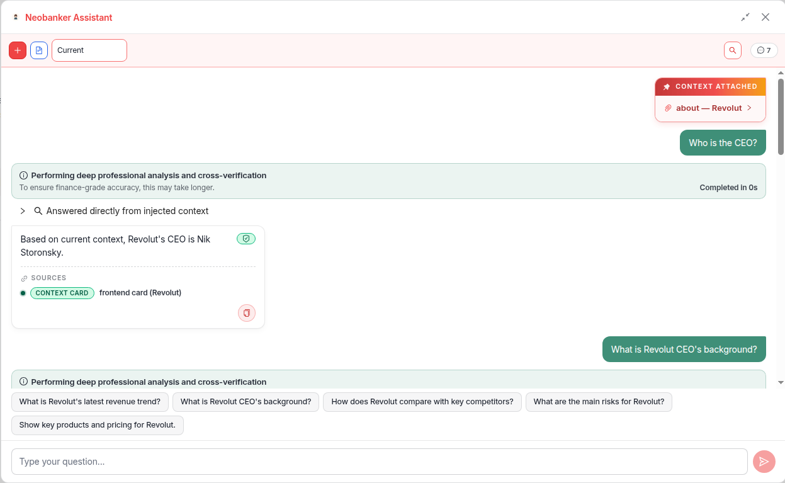
N-Banker: 1st Global Neobank Research Center
- Leading AI strategy and LLM agent development for the Neobank Research Center platform.
- Automated complex information retrieval, analysis, and strategic consultation for business partners.
- Built on machine learning + LLM stack (RAG, agents, FinTech pipelines).
- 🤝 Partners: Digital Financial Services Research Center × Hong Kong Polytechnic University.
Combining Image and Graph-based Neural Networks for Handwriting Recognition
- SNSF-funded project on handwritten historical document analysis.
- Combines image-based sematic with graph-based topology for deep learning.
- Paper under revision.
- 🤝 Partners: iCoSys Institute (HEIA, HES-SO Fribourg) × TU Dortmund.
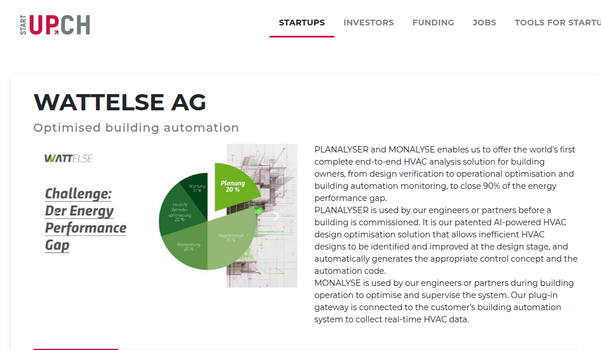
PLANALYSER: Automated HVAC-Concept Audit and Optimisation using AI
- Innosuisse-funded AI-driven HVAC-concept audit and optimization on engineering drawings.
- Contributions: data preprocessing, model development (symbol / edge / topology extraction), pipeline design.
- 🤝 Partners: iCoSys Institute (HEIA, HES-SO Fribourg) × WATTELSE AG.
Novel State-of-the-Art Graph Matching Algorithms
- SNSF-funded research on novel graph matching algorithms.
- Bridges graph kernels, graph edit distance, and GNN embedding spaces.
- Published at ACPR 2023: Bridging Distinct Spaces in Graph-based Machine Learning.
- Host: Pattern Recognition Group, University of Bern.
OCTOPUSSY: Optimization of Polymers Using Sustainable SYnthesis
- Graph-based machine learning and chemical descriptor design for polymer optimization and redox-potential prediction.
- Published in Journal of Computational Chemistry (2024).
- RedoxPrediction package open-sources the implementation.
- 🤝 Partners: COBRA × LITIS (Univ. Rouen) × CSCT (Univ. Bath).
APi: Apprivoiser la Pré-image
- ANR-funded thesis research on the pre-image problem in ML for structured data.
- Focus: pattern recognition in discrete structured spaces.
- Produced 3 journal articles, 2 workshop papers, and the graphkit-learn library.
- Host: LITIS lab (Université Rouen Normandie).
Service-oriented Programmable Control and Scheduling for Software Defined Network
- M.Sc. research on service-oriented programmable control for SDN.
- Applied extreme learning machine (ELM) to predict network mobility in Named Data Networks.
- Resulted in one China patent (CN106376041B).
- Host: Xi'an Jiaotong University.
Local Confidential Translator
- Fully offline, privacy-first document translation powered by local LLMs.
- MIT-licensed open source, deployable via a single Docker command.
- Built end-to-end via AI-assisted (vibe) coding; MVP1 in testing.
Research Outline
Graph Machine Learning
Bridging graph kernels, edit distances, GNNs, transformers. Pre-image and generation problems.
Spatio-Temporal Learning
Time series with entity embeddings, spatial graphs for environmental forecasting.
Graph AI for science and industry
Molecular property prediction (foundations for drug discovery), computational chemistry, smart engineering, hydrology, digital humanities, finance, healthcare.
LLM Systems & Agents
RAG pipelines, fine-tuning (LoRA), agent orchestration for production AI.
Professional Experience
Postdoctoral Researcher
SNSF-funded research on spatio-temporal graph convolutional networks and LLMs for Swiss river temperature forecasting. Developing transformer architectures with entity embeddings and graph structures. Paper accepted by ICPR 2026.
Scientific Collaborator
Applied topology-aware graph and vision deep learning for symbol detection, connection prediction, and graph construction in engineering diagrams and handwritten document analysis. Contributed to SNSF-funded Virtual Bodmer project (accepted) for 3D digital reconstruction of ancient papyrus.
Research Fellow
SNSF-funded research on novel graph matching algorithms. Published at ACPR 2023 on bridging distinct spaces in graph-based machine learning.
Postdoctoral Researcher
Applied graph ML to polymer optimization (OCTOPUSSY project) and redox potential prediction. Published in Journal of Computational Chemistry (2024).
Ph.D. in Computer Science
Thesis: "Bridging graph and kernel spaces: a pre-image perspective": Graph kernels, graph edit distances, and pre-image problems.
M.Sc. in Software Engineering
Service-oriented programmable control for Software-Defined Networks; applied extreme learning machine (ELM) to network mobility prediction. Resulted in 1 China patent (CN106376041B).
B.S. in Information Engineering
Foundations in signal processing, networks, and software engineering.
Skills & Technologies
Selected Awards & Grants
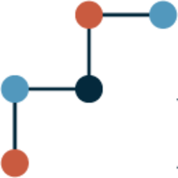
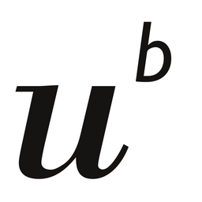
UniBE ECSC Open Round 2023/2
Early Career Scientist Cooperation. Applicant & Principal Investigator. Predicting molecular energies with multiscale graph ML built on Interacting Quantum Atoms (IQA) and GNNs.
Innosuisse Grant
PLANALYSER: AI-driven HVAC-concept audit (with WATTELSE AG).
ANR Grant (PhD project APi)
PhD thesis funding (LITIS, INSA Rouen), project Apprivoiser la Pré-image: graph kernels & ML for structured data.
Academic Services
Supervision
- 20+ students mentored
- Topics: Computer vision, Graph-based learning, Smart engineering, Deep learning, LLMs, Agent systems
Associations
- Member of the Swiss Association for Pattern Recognition (SAPR) (2024-)
- Member of the Marie Curie Alumni Association China Chapter (2024)
- Associated member of the LITIS lab (2022)
Reviewing
- International Conference on Pattern Recognition 2024
Invited Talks
- 🇫🇷 Invited speaker, GRAPHADON Summer School, Rouen, France — Bridging Graph Spaces: Novel Algorithms and Their Applications (Jun 2024).
- 🇯🇵 Oral presentation, ACPR 2023, Kitakyushu, Japan (Nov 2023).
- 🇫🇷 Video presentations at S+SSPR Workshops 2020 — A Graph Pre-image Method Based on Graph Edit Distances [YT · Bilibili] & A Metric Learning Approach to Graph Edit Costs for Regression [YT · Bilibili] (Jan 2021).
- 🇩🇪🇫🇷 Invited talk, 2020 Online CSC-Seminar in DE. and FR. — A Graph Pre-image Method Based on Graph Edit Distances (awarded; Sep 2020) [Slides · Certificate].
News & Updates
Contact
Location
🇨🇭 University of Bern · Pattern Recognition Group
Schützenmattstrasse 14, 3012 Bern, Switzerland
Phone
🇨🇭 +41 78 224 1419 (Switzerland)
🇨🇳 +86 <please-add> (China)
Visitors
— total visits — countries past 3 days via Microsoft Clarity